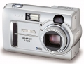

器材
党
全部器材
产品年表
名词百科
榜单
器材库
> 不可换镜头数码相机 > DiMAGE E223

美能达
DiMAGE E223
分类
不可换镜头数码相机
点评
0 条
图片
0 张
评测
0 篇
DiMAGE E223拥有200万有效像素，3倍光学变焦镜头，1.5英寸液晶屏。
产品类型
不可换镜头数码相机
综合评分
暂无评分
无忌评测
暂无评测
规格参数
网友点评
(0)
产品图 / 样片
(0)
评测文章
(0)
规格总览
发布日期
2003-03-02
停产
是
影像规格
影像传感器
CCD
总像素
210万
有效像素
200万
静态图像尺寸
2048 x 1536
静态图像格式
JPEG
画幅比
4:3
镜头和对焦
镜头结构
9片/6组
焦距
6.2mm-18.6mm
等效35mm画幅焦距
38mm-114mm
最大光圈
2.9-3.0
光学变焦
3.0倍
数码变焦
3.0倍
最近对焦距离
广角60cm, 微距40cm
曝光控制
测光模式
中央重点测光
曝光模式
P（程序自动曝光）
快门速度
1- 1/1000
曝光补偿
±2EV以1/3EV级调整
ISO感光度
100, 自动
白平衡
自动, 预设白平衡
自拍
10秒, 2秒
闪光灯
内置闪光灯
固定
闪光模式
自动, 关闭, 减轻红眼慢速同步
取景规格
取景器
光学取景器
LCD类型
彩色TFT LCD
LCD尺寸
1.5英寸
LCD像素
62万
文件输入/输出
存储卡
SD/SDHC, MMC
数据接口
USB
视频/音频接口
AV 输出
电源
电池
一枚CR-V3锂电池/两枚AA Ni-MH电池
外观
颜色
银色
尺寸
107 x 67 x 38mm
重量
200g
该产品暂无存档的网友点评
该产品暂无存档的产品图
评测 / 相关文章
该产品暂无存档的评测文章